米とぎ名人 [梅吉]
お米を研いでいると梅吉さんから厳しく指導が入ります(꒦ິ⌑꒦ີ)
弟子の仕事に不満があるようです。
（８秒です）
![[猫]](https://blog.ss-blog.jp/_images_e/101.gif) もっと ちゃっちゃと とがなあかん
もっと ちゃっちゃと とがなあかん
すすぎの時も注意されます(꒦ິ⌑꒦ີ)(꒦ິ⌑꒦ີ)
（８秒です）
わしのてほんを ちゃんとみてんか！！
ことお米に関しては一家言あるのでしょうか・・・
（生米も炊いたお米も好き。あげませんけどw）
弟子は独立させてもらいたいんだけどなーwww

今度はかくれんぼの名人ですか？
（本にゃんは隠れているつもりです(*>艸<)）
 ↑ガブッと一押し↑
↑ガブッと一押し↑
弟子の仕事に不満があるようです。
（８秒です）
すすぎの時も注意されます(꒦ິ⌑꒦ີ)(꒦ິ⌑꒦ີ)
（８秒です）
ことお米に関しては一家言あるのでしょうか・・・
（生米も炊いたお米も好き。あげませんけどw）
弟子は独立させてもらいたいんだけどなーwww

今度はかくれんぼの名人ですか？
（本にゃんは隠れているつもりです(*>艸<)）
雨上がりの風景 [梅吉]
寒い雨が上がってカラッと晴れた日、お部屋で傘を干していたら・・・
（風が強くて外に干せませんでしたwww）

やっぱり来た。

み〜た〜な〜
見てますよ、ついでに写真も撮ってます＾＾
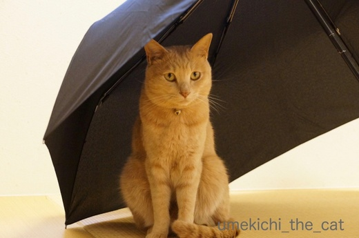
どうして傘を見ると走ってくるんでしょうね、梅吉さんは。
特別なことをするわけじゃなく
お顔を洗ったりいつもとおんなじことするだけなのに。
秘密基地にいるような感覚なのかな？
だったら前々から気になっていたこんなのがあるのですよ。梅吉さん。
喜びそうだなぁ・・・でも場所取りそうだなぁ・・・
きっとがぶがぶして壊すんだろうなぁ・・・

せやで まちがいない わしは きたいにこたえるおとこやからな
ですよねー(꒦ິ⌑꒦ີ)
梅吉のねこ草（燕麦）に小穂が出て来ました。
小穂が燕っぽいので燕麦なんですって。
この状態で小さな花が咲いて実が出来るようです。
このまま育てて種を収穫してみようかな＾＾
ねこ草の種として流通しているものは一世代ものが多くて
こうなるのは珍しいみたいです。
Amazonで買ったものなんですけどね。
↑ガブッと一押し↑
（風が強くて外に干せませんでしたwww）

やっぱり来た。

見てますよ、ついでに写真も撮ってます＾＾
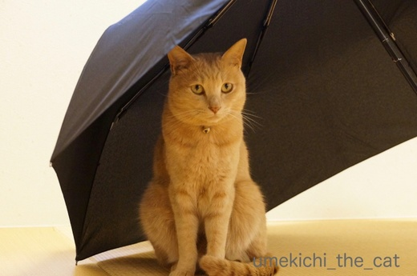
どうして傘を見ると走ってくるんでしょうね、梅吉さんは。
特別なことをするわけじゃなく
お顔を洗ったりいつもとおんなじことするだけなのに。
秘密基地にいるような感覚なのかな？
だったら前々から気になっていたこんなのがあるのですよ。梅吉さん。
喜びそうだなぁ・・・でも場所取りそうだなぁ・・・
きっとがぶがぶして壊すんだろうなぁ・・・

ですよねー(꒦ິ⌑꒦ີ)
梅吉のねこ草（燕麦）に小穂が出て来ました。
小穂が燕っぽいので燕麦なんですって。
この状態で小さな花が咲いて実が出来るようです。
このまま育てて種を収穫してみようかな＾＾
ねこ草の種として流通しているものは一世代ものが多くて
こうなるのは珍しいみたいです。
Amazonで買ったものなんですけどね。
特におでこが好きなんです [梅吉]
にゃんこの皆さんは今が絶賛換毛期ですね＾＾
抜け毛処理とベランダでくりんくるんした後の埃を払うために
梅吉さんにも毎晩ブラシをしています。
ブラシというかクシ。更に言うなら100均のクシ。
中学生の時リーゼント男子がこんなクシを持っていたような・・・

首回りが良い感じですか？
他のブラシ類は一切拒否。ファーミネーターなんてとんでもない。
シンプル・イズ・ベスト、プチプラが梅吉さんのチョイスです(*>艸<)

ここもお好きな箇所ですよねー＾＾

ああ〜![[黒ハート]](https://blog.ss-blog.jp/_images_e/136.gif) たまらんわぁ
たまらんわぁ
せまーい猫の額が特に気持ちが良いようです。
首回り＆顔まわりはもちろん最近は胸やお腹周りもあまり嫌がらなくなりました。
が、おちり付近から表情がきびしくなりおしっぽは逆鱗ポイントですw
たくさん抜けて来るので（短毛種比）ブラシ係もやりがいがありますよ(๑˃̵ᴗ˂̵)و
↑ガブッと一押し↑
抜け毛処理とベランダでくりんくるんした後の埃を払うために
梅吉さんにも毎晩ブラシをしています。
ブラシというかクシ。更に言うなら100均のクシ。
中学生の時リーゼント男子がこんなクシを持っていたような・・・

首回りが良い感じですか？
他のブラシ類は一切拒否。ファーミネーターなんてとんでもない。
シンプル・イズ・ベスト、プチプラが梅吉さんのチョイスです(*>艸<)

ここもお好きな箇所ですよねー＾＾

せまーい猫の額が特に気持ちが良いようです。
首回り＆顔まわりはもちろん最近は胸やお腹周りもあまり嫌がらなくなりました。
が、おちり付近から表情がきびしくなりおしっぽは逆鱗ポイントですw
たくさん抜けて来るので（短毛種比）ブラシ係もやりがいがありますよ(๑˃̵ᴗ˂̵)و
わし ほんきだす [梅吉]
ごにちは おとこのこのせっくや おかーさんがいうとったわ

わし やればできるこ やねん
連休も終わっちゃいますねー。
皆様今日は明日への英気を養う日でしょうか＾＾
前記事の皆様へのコメントお返事は明日になりそうです。よろしくですー。
出るときのことは考えない [梅吉]


とろける季節がやってきた！ [梅吉]
連休前半は暖かい（暑い）日が続いて半袖で過ごしています。
にゃんこの寝相もでろーんととろけるものに変わってきましたよー。
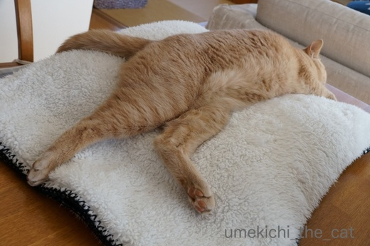
すごい寝相ですね、梅吉さん。
でろーんとなってもふかふかひざ掛けは手放したくないらしいです(^▽^;)

上半身は膝掛け、下半身はテーブルの冷やっこい感覚を楽しむ技。

妙な寝相ですが熟睡してます。

おひかえなすって
カッコつけてもブランケットにくるまっているんじゃ決まりませんよ(*>艸<)
日中はでろーんとしていますが夜になるとブランケットが恋しくなる様子。
ブランケット類、しまいたいのですがタイミングが難しいです。
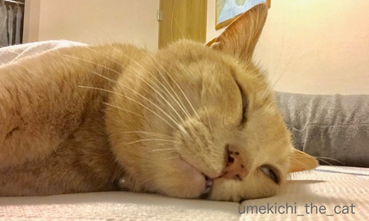
連日おっとと二度寝を楽しむ連休の朝。
目も口も緩みっぱなしー！！
毎朝寝室から写真が送られてきますwww
↑ガブッと一押し↑
にゃんこの寝相もでろーんととろけるものに変わってきましたよー。
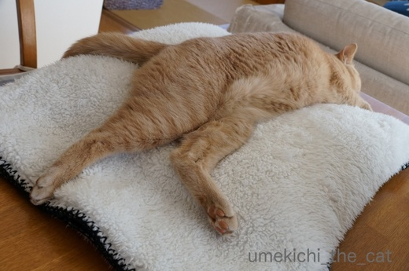
すごい寝相ですね、梅吉さん。
でろーんとなってもふかふかひざ掛けは手放したくないらしいです(^▽^;)

上半身は膝掛け、下半身はテーブルの冷やっこい感覚を楽しむ技。

妙な寝相ですが熟睡してます。

カッコつけてもブランケットにくるまっているんじゃ決まりませんよ(*>艸<)
日中はでろーんとしていますが夜になるとブランケットが恋しくなる様子。
ブランケット類、しまいたいのですがタイミングが難しいです。
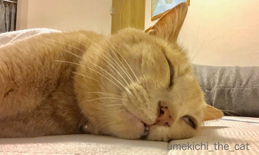
連日おっとと二度寝を楽しむ連休の朝。
目も口も緩みっぱなしー！！
毎朝寝室から写真が送られてきますwww
勝手に盛り上がられると少し寂しい [梅吉]
あれこれバタバタしている途中、ふっと見ると期待の眼差しで見つめるにゃんこが！
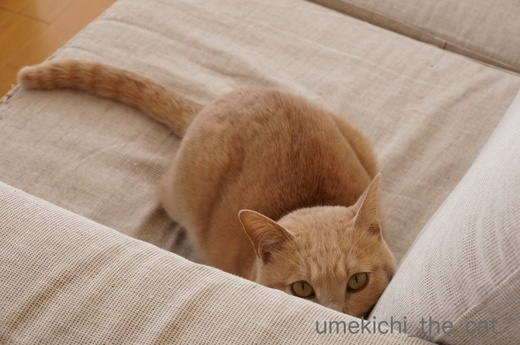
構って欲しくて強力ビームを出してます(^▽^;)
おかーさんもこう見えて結構忙しいのですがそんな目で見つめられるとねぇ・・・
じゃあ、少しだけお相手を。
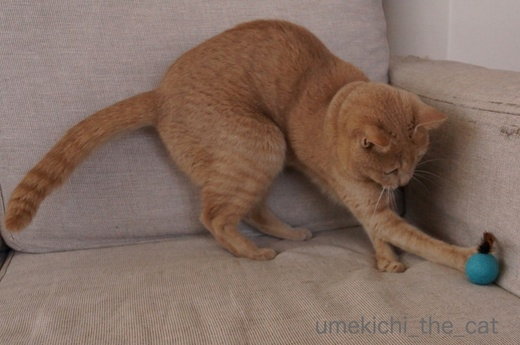
久しぶりのおもちゃでお相手しますよ！
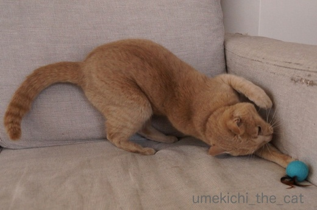
おお！良い食いつきっぷり。
気分が乗っているときは体のキレも抜群ですね＾＾

ちらキバどころか歯がむき出しなんですけど！

あの・・・そろそろおかーさんがおもちゃを投げましょうか？

わし いまいそがしいねん

![[exclamation×2]](https://blog.ss-blog.jp/_images_e/160.gif)
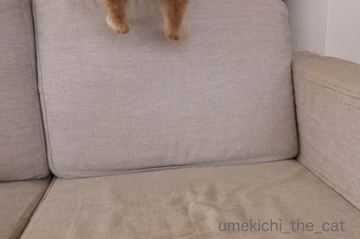
去っていくあち・・・・・
しばしお相手するつもりだったのに勝手に盛り上がっておかーさんおいてけぼり(꒦ິ⌑꒦ີ)
一人遊びに夢中になって構ってもらえないことってありませんか？
楽しそうだから良いんですけどねー。
でもおもちゃがソファの下などに入って取れなくなると呼びつけられますw
にゃんこの体内時計が初夏の訪れを告げているのでしょうか。

今年はじめての白目が観測されましたよ！！
↑ガブッと一押し↑
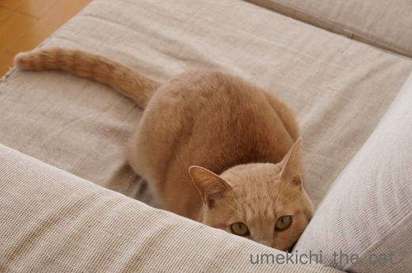
構って欲しくて強力ビームを出してます(^▽^;)
おかーさんもこう見えて結構忙しいのですがそんな目で見つめられるとねぇ・・・
じゃあ、少しだけお相手を。
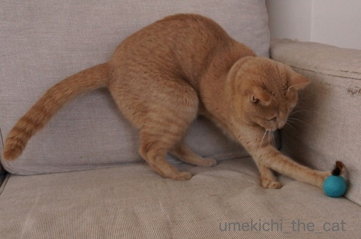
久しぶりのおもちゃでお相手しますよ！
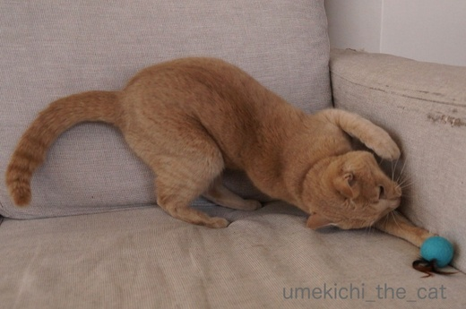
おお！良い食いつきっぷり。
気分が乗っているときは体のキレも抜群ですね＾＾

ちらキバどころか歯がむき出しなんですけど！

あの・・・そろそろおかーさんがおもちゃを投げましょうか？


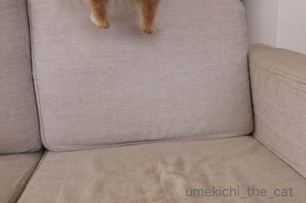
去っていくあち・・・・・
しばしお相手するつもりだったのに勝手に盛り上がっておかーさんおいてけぼり(꒦ິ⌑꒦ີ)
一人遊びに夢中になって構ってもらえないことってありませんか？
楽しそうだから良いんですけどねー。
でもおもちゃがソファの下などに入って取れなくなると呼びつけられますw
にゃんこの体内時計が初夏の訪れを告げているのでしょうか。

今年はじめての白目が観測されましたよ！！
梅吉の節句 [梅吉]
梅吉さんは端午の節句ってご存知ですか？
男の子が健康に育ってくれるようにお願いする日なんですよ。

そうそうその兜は梅吉さんを病気から守ってくれるんですって。
どうです？ちょっと早いけどかぶってみませんか＾＾
ついでに荒武者ぶりを披露しちゃいましょうよー！！

なんて虚ろな目の荒武者・・・・・
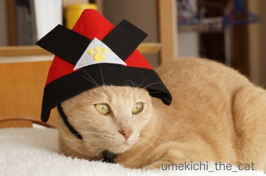
そうそう＾＾
その調子でキリッとした兜姿を披露しましょう！

かぶと ずれてきたで
今日はあまり協力的ではないようで(^▽^;)
じゃあ兜を脱ぎましょうか？

と脱がそうとするとあごヒモに付いていた留め具に反応。
そうそう！その調子で荒武者ぶりを・・・・・

かぶとちゅーのは おもちゃやったんやな！

・・・・・

爪が取れなくなって困っている模様w
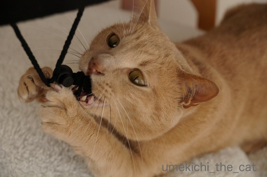
なまいきなやっちゃー![[むかっ（怒り）]](https://blog.ss-blog.jp/_images_e/152.gif)

・・・・・

おかーさん とってやー

梅吉さんは兜無しでもりりしい若武者ですよ＾＾
梅吉4月22日が推定誕生日。三歳になります。
保護団体の方、獣医さんそれぞれの推定誕生日の間をとって
４・２２（よい・にゃんにゃん）の日に私が独断で決めました。
もしかしたらもう生まれていて他の兄弟を押しのけながら
猫のお母さんを独占してたかも(*>艸<)
お薬生活だけど余病などなく元気に歳を重ねて行って欲しいです。
ってこの内部リンクが5月15日以降無効になるとな！？
梅吉の体重管理、通院記録の便利な覚書なのにー！！！
後日ちまちま直すとしましょうか・・・
↑ガブッと一押し↑
男の子が健康に育ってくれるようにお願いする日なんですよ。

そうそうその兜は梅吉さんを病気から守ってくれるんですって。
どうです？ちょっと早いけどかぶってみませんか＾＾
ついでに荒武者ぶりを披露しちゃいましょうよー！！

なんて虚ろな目の荒武者・・・・・
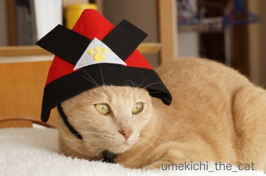
そうそう＾＾
その調子でキリッとした兜姿を披露しましょう！

今日はあまり協力的ではないようで(^▽^;)
じゃあ兜を脱ぎましょうか？

と脱がそうとするとあごヒモに付いていた留め具に反応。
そうそう！その調子で荒武者ぶりを・・・・・


爪が取れなくなって困っている模様w
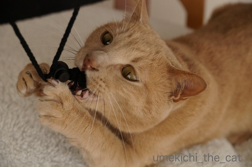


梅吉さんは兜無しでもりりしい若武者ですよ＾＾
梅吉4月22日が推定誕生日。三歳になります。
保護団体の方、獣医さんそれぞれの推定誕生日の間をとって
４・２２（よい・にゃんにゃん）の日に私が独断で決めました。
もしかしたらもう生まれていて他の兄弟を押しのけながら
猫のお母さんを独占してたかも(*>艸<)
お薬生活だけど余病などなく元気に歳を重ねて行って欲しいです。
ってこの内部リンクが5月15日以降無効になるとな！？
梅吉の体重管理、通院記録の便利な覚書なのにー！！！
後日ちまちま直すとしましょうか・・・
うわさの毛深いヤツ [梅吉]
こてつくんも魅了した「毛深いヨロコブラ」。
我が家も買ってみました。
じゃらし部分がうねうね虫みたいに動きます。虫嫌いには若干ぞわっとする動きですよ(^▽^;)
柔らかいコード状のワイヤーがびよんびよん不規則に動くのが良い感じ。
動きにつられてすぐににゃんこがやってきます＾＾

こんな感じ・・・ってお分かりになりますかー？
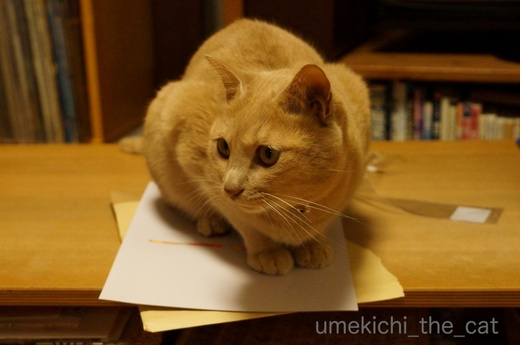
ヨロコブラが入っていた封筒に乗る梅吉さん。
でもー、楽しいのは袋じゃなくてこちらですよ！
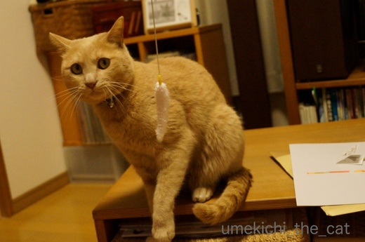
むっ！！
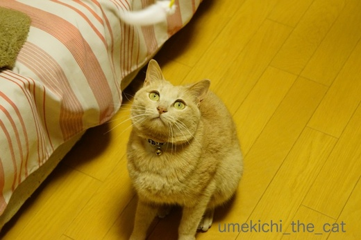
やる気満々のお顔です(*>艸<)
ヨロコブラ祭り、行きますよーーー！！！
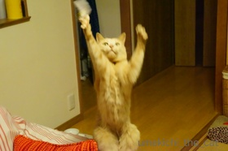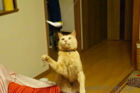


 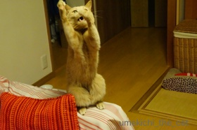
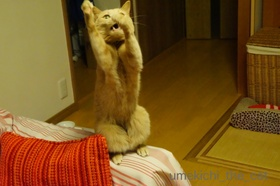
ふんがふんが鼻を鳴らしながら遊んでいました (^▽^;)
が！１週間ほどたった今現在ちょっと飽きてきたようです（涙）
ただ振り回すだけじゃダメ。
ヨロコブラを面白く操る技も要求されるようになっちゃいました。
厳しいなぁ・・・・・
↑ガブッと一押し↑
我が家も買ってみました。
じゃらし部分がうねうね虫みたいに動きます。虫嫌いには若干ぞわっとする動きですよ(^▽^;)
柔らかいコード状のワイヤーがびよんびよん不規則に動くのが良い感じ。
動きにつられてすぐににゃんこがやってきます＾＾

こんな感じ・・・ってお分かりになりますかー？
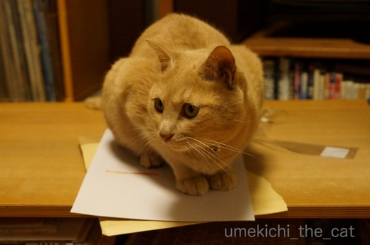
ヨロコブラが入っていた封筒に乗る梅吉さん。
でもー、楽しいのは袋じゃなくてこちらですよ！
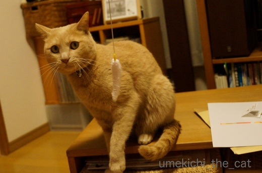
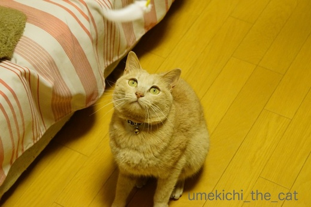
やる気満々のお顔です(*>艸<)
ヨロコブラ祭り、行きますよーーー！！！
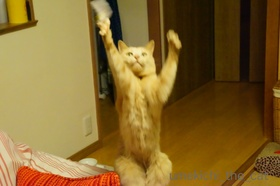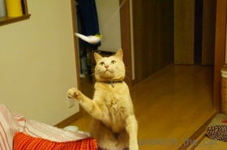


 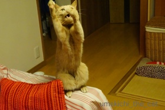
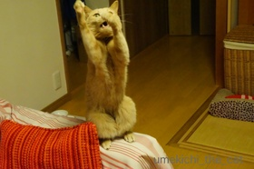ふんがふんが鼻を鳴らしながら遊んでいました (^▽^;)
が！１週間ほどたった今現在ちょっと飽きてきたようです（涙）
ただ振り回すだけじゃダメ。
ヨロコブラを面白く操る技も要求されるようになっちゃいました。
厳しいなぁ・・・・・
ねこ草と毛玉 [梅吉]
お外で食べるねこ草は格別ですかー？
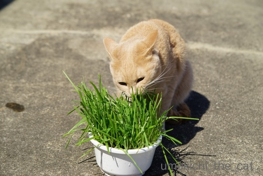
ねこ草に思い切りお顔を突っ込んでムシャムシャ・・・・・

お外だとそんなことしてもおかーさんに叱られないしね＾＾

あ、タネも一緒に食べちゃった？
勢いよく草を引っこ抜いて食べるのでタネまで一緒に抜けて来て
食べちゃうことが時々あります。
あとでうんPに混ざって出て来ていますが・・・
先日おっとに「なんで梅吉はねこ草食べるの？」と聞かれて
「うーん・・・・・なんでって聞かれてもねぇ」
梅吉の場合は嗜好品みたいなもの。
普通は毛玉の吐き戻しを促すのに食べると聞きますが
梅吉は我が家に来てほぼ３年間毛玉を吐いたことがありません・・・・・
というか吐くという行為が２ー３回あったかな、という程度なのです。
先代・先先代とゲロゲロっ子だったのに！
今までは若いから、と気にもしていなかったのですが梅吉もそろそろ３才。
毛玉がお腹にたまっているんじゃとちょっと心配になって来ました。
うんPと一緒に出ていると思ってはいるのですが・・・
来週末が定期診察なので獣医さんに聞いてみようっと。

今朝のちゅうちゅうポーズ onおかーさんのお膝の上Ｏ(≧▽≦)Ｏ
↑ガブッと一押し↑
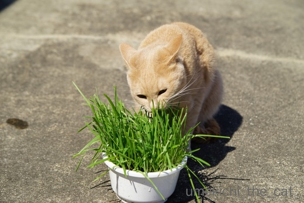
ねこ草に思い切りお顔を突っ込んでムシャムシャ・・・・・

お外だとそんなことしてもおかーさんに叱られないしね＾＾

あ、タネも一緒に食べちゃった？
勢いよく草を引っこ抜いて食べるのでタネまで一緒に抜けて来て
食べちゃうことが時々あります。
あとでうんPに混ざって出て来ていますが・・・
先日おっとに「なんで梅吉はねこ草食べるの？」と聞かれて
「うーん・・・・・なんでって聞かれてもねぇ」
梅吉の場合は嗜好品みたいなもの。
普通は毛玉の吐き戻しを促すのに食べると聞きますが
梅吉は我が家に来てほぼ３年間毛玉を吐いたことがありません・・・・・
というか吐くという行為が２ー３回あったかな、という程度なのです。
先代・先先代とゲロゲロっ子だったのに！
今までは若いから、と気にもしていなかったのですが梅吉もそろそろ３才。
毛玉がお腹にたまっているんじゃとちょっと心配になって来ました。
うんPと一緒に出ていると思ってはいるのですが・・・
来週末が定期診察なので獣医さんに聞いてみようっと。

今朝のちゅうちゅうポーズ onおかーさんのお膝の上Ｏ(≧▽≦)Ｏ

カフェオレ色の梅吉

梅吉 2023年8月10日 永眠


梅吉と出会った譲渡会

犬猫の理由なき殺処分ゼロ
妄想広告
UMEKICHI 光

爆発的に早い！
時々攻撃的！
Thanks to Mr.Boss365
爆発的に早い！
時々攻撃的！
Thanks to Mr.Boss365